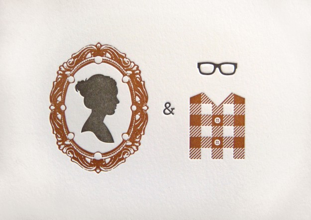
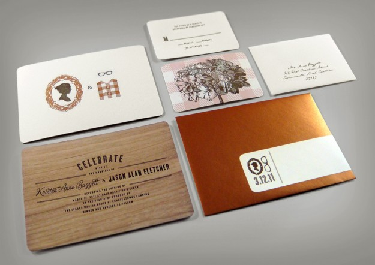
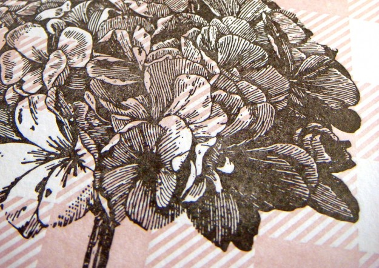

I Do Letterpress - J Fletcher Design
As a designer there is no better way to announce your wedding than to create your own letterpress wedding invites. The insanely talented J Fletcher managed to merge the two distinct styles of his wife and himself to create these lovely invites and groomsmen gifts for the wedding. Go get inspired looking through the rest of his work.